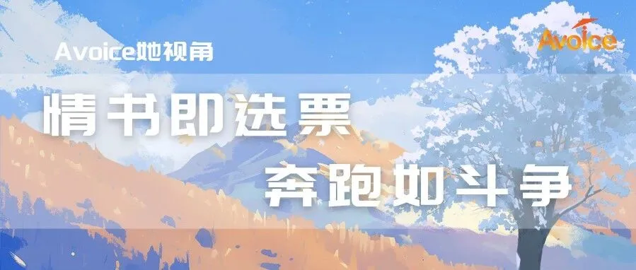
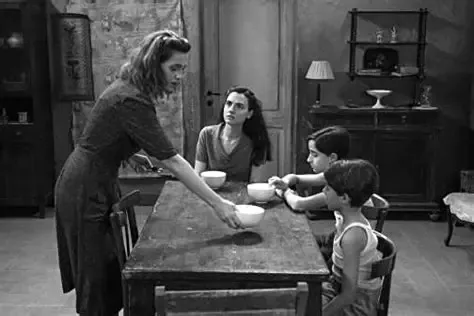
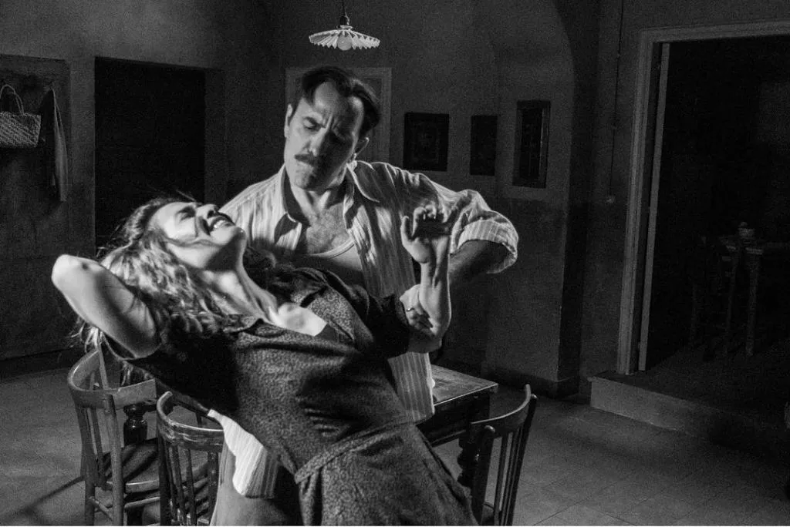
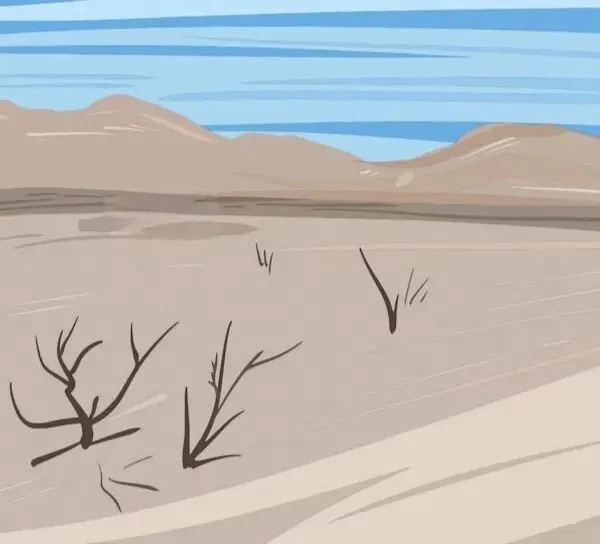
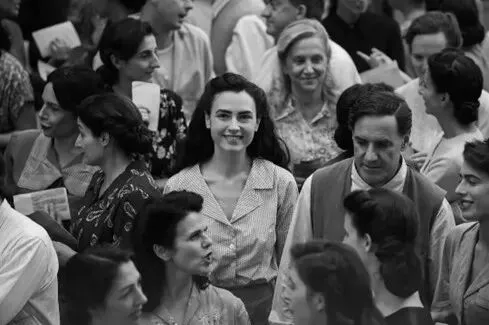

导演宝拉·柯特莱西是意大利国宝级女演员，也是本片的主角之一。2024年，她凭借此片获得第69届意大利大卫青年进步奖及最佳女主角奖。同年，该片也在意大利本土夺得当年票房冠军，跻身意大利影史票房前十。
在国内，电影也获得了不俗的成绩，上映后迅速进入豆瓣电影Top 100。
影片以底层女性迪莉娅的视角展开叙述。迪莉娅每天在丈夫伊万诺阴晴不定的情绪暴力和身体暴力中艰难度日，照料一家六口。 在重复枯燥的生活中，只有女儿玛塞拉、好友玛丽莎和每天独自走过街道的自由时光能给予她些许安慰与解脱。然而，一封神秘信件的到来即将彻底改变迪莉娅的人生……
“啪”， 一个利落的巴掌开启了整场电影，也开启了迪莉娅平淡而枯燥的一天。
1946年的意大利，像废墟中一颗破土而出的种子，开始发芽，也开始觉醒。二战后初期，生活在意大利的人们正在经历饥荒、物资短缺和社会秩序的全面崩溃。失业潮席卷全国，与其他的底层贫困家庭一样，为缓解经济压力，迪莉娅承担起了工作与照顾家庭的双重责任。

影片中，迪莉娅从清晨起床开始就在为家庭运转。开窗通风、做饭摆桌、全家用餐时像餐厅侍者般站在一旁，随时为家人服务。在此期间，迪莉娅还需要照料瘫痪在床的公公。在家务之外，她还需要外出做零工以赚取微薄的工资以支持家庭开支。然而，每日辛勤的付出并未给她带来任何回报或尊重。在父权制的强势压迫下，迪莉娅如同一个“家庭奴隶”，背负着社会身份的沉重枷锁，接受着社会和家庭的规训与审视，是顺从的妻子，温柔的母亲，辛劳的照料者，唯独不是自己。
规训(Discipline) 一词在权力与社会控制层面的意义最初可追溯至法国哲学家米歇尔·福柯在《规训与惩罚》中对权力运作方式的分析。他认为，规训不是一种简单的惩罚，而是一种通过控制身体和意识来塑造个体的技术，是现代社会中一种无所不在的权力运作方式。
影片中，伊万诺以丈夫身份将家庭塑造成一个以他为中心的小型父权制社会。迪莉娅作为被奴役的主要对象，麻木服从于伊万诺的统治权威，忍受着伊万诺的统治暴虐，逐步被规训为维系其权力的“人形工具”。 久而久之，规训如同一条无声流淌的河，悄然渗入迪莉娅的自我认知，使她习惯于通过自我监控与约束来维持既有的权力框架与秩序，把暴力的阴影视为日常。一场看似合理实则残酷的自我规训在无意识中完成。无数以父权为轴心的家庭小型社会如沙砾般不断堆砌汇聚，最终创造出一片集体麻木的人间荒漠，静默无声。

迪莉娅遭受家暴时，坐在院子里的邻居将残酷的家暴归因为“伊万诺暴躁的性格”；玛塞拉忘记灶台上的土豆时，迪莉娅紧张地低声叮嘱，将对丈夫的恐惧与自我规训展现得淋漓尽致。“偶尔，偶尔一次，狠狠地打一顿，让她明白。我就是这样对待你妈妈的，你见过她回嘴吗？”伊万诺父子关于男权社会如何世代奴役女性的对话，似是一场郑重地传授，让父权的齿轮环环相扣，越拧越紧。
导演对于父子间对话剧情的处理非常精妙。片段以戏谑的音乐与双人舞蹈融合，在黑色幽默中弱化了“家暴”的血腥感，减少了观感上的不适。但同时，这样的表达并未削弱“家暴”的恶劣性，轻快节奏所创造出的反差感使这场“规训”仍充盈着恐惧而沉重的气氛，似毒气般无孔不入。
导演宝拉·柯特莱西在受访时谈到，拍摄这部电影的初衷是希望自己的女儿能了解这个国家有关女性成长的历史，明白她们所拥有的权利从何而来，记住有人曾为捍卫权利所做的顽强抗争。
在当时的意大利，不少家庭往往希望自己的孩子（尤其女儿）通过嫁给富裕且品行端正的绅士人家来改善家庭现状并实现社会阶级的跃升。主角迪莉娅的女儿玛塞拉正是这一观念的典型体现。
迪莉娅原本以为这样的婚姻安排可以让女儿不再像自己一样生活，但回忆与现实的相互印证及未婚夫卡利奥展现出的专横强硬态度使她开始重新审视女儿的婚姻。“婚姻是个好东西，但结婚是一辈子的事，没有后悔路可以走。”迪莉娅发出的感叹没有得到女儿的回应。成长在父权秩序笼罩下的玛塞拉早已在潜移默化中承袭了性别角色的规训，无形的代际创伤将母亲的枷锁也不自觉地传递给了下一代。
维维安·拉科夫于20世纪60年代首次提出“代际创伤”的概念。代际创伤是指家族中未解决的心理创伤通过行为模式、情感反映或教养方式，从一代人无意识地传递给下一代。玛塞拉对父权社会下对男性权力的恐惧及女性权利的漠视都是这一创伤间接作用于她的反映。

最后，母亲迪莉娅亲手“毁掉”了女儿的婚姻，用“炸掉”卡利奥家的咖啡馆自主地提出反对意见，将自己攒下的钱留给女儿供她读书，代表自己亲身参加选民投票。迪莉娅与玛塞拉在当时当刻真正实现了相互映射，让她成为她的过去，让她走向她的未来。任何一点微小的改变都像一阵风，轻轻抚平沙砾堆砌的父权沙漠。
影片结尾，故事回到电影开始时提到的那一封神秘信件。那是一张选票资格。
电影中除迪莉娅之外，导演还塑造了许多其他的女性角色。她们的客观条件与生活场景虽可能与迪莉娅不尽相同，但在家庭与社会中的出境却高度相似。她们同样没有主导权、没有选择权，甚至没有平视男性的权利。她们被钳制于父权制度下，一动不动，却毫不挣扎。唯一一位带着自我意识生活的女性角色是那位总是收补好针线坚持“自己说了算”的裁缝店女老板。她的存在虽如萤火般微小，却如同那张握在迪莉娅手中的选票，只是一张但如此重要。

一次选票资格或许不会立刻让压抑已久的生活发生巨变，但它意味着女性的主体意识不再“带着镣铐”，不再被囚禁在心灵的暗角。于千千万万的她们而言，这张选票如同萤萤之火，点燃心声，此后必将汇聚成追求自我的解放之炬。
“我没有保护自己的盾牌，
也没有抵御敌人的武器，
没有隐藏自己的头盔，
没有能够代祷的圣人，
我有的只是口中的舌头，
即使你把舌头都割了，我也不会停的，
对不起，我也会唱歌，闭上嘴唱歌。”
撰稿｜张咏晴
照片｜《还有明天》剧照
插图｜unsplash
编辑｜赛儿
排版&封面｜张景阳